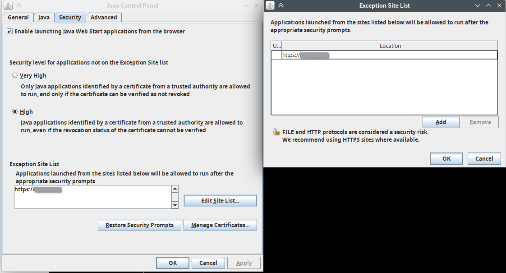

如何打開jnlp格式的kvm console
前言
有些老舊的伺服器內的IPMI給的kvm console是一個jnlp檔，而不是直接給html5來用，本文將介紹如何使用jnlp檔來連上IPMI開啟kvm。
設定
- 安裝
icedtea-web和jre8
- 修改
java.security( linux上全域的設定在/etc/java-jre8/security/java.security)，找到這三段內容，全部註解掉
1 | |
1 | |
1 | |
- 打開Java Control Panel，修改security分頁的設定，將安全等級下降為high，並把IPMI的域名/IP加進白名單來允許Self-signed certificate

- 把
icedtea-web設成用來開啟jnlp檔，並把使用的java切成jre8即可( 例如在Arch上是這樣設定sudo archlinux-java set java-8-jre/jre)
同場加映
- 如果使用的是DELL的伺服器，而且IPMI為iDRAC6，那麼可以直接使用docker來開啟kvm( DomiStyle/docker-idrac6 )
- 如果使用的是很舊的IPMI，有可能連設定的網頁部分都需要flash( 例如Cisco UCS C240 )，不想配置flash環境的話也可以直接用docker來開( jchprj/Play-Adobe-Flash-After-EOL )
參考
如何打開jnlp格式的kvm console
https://www.zenwen.eu.org/how-to-use-jnlp-kvm/